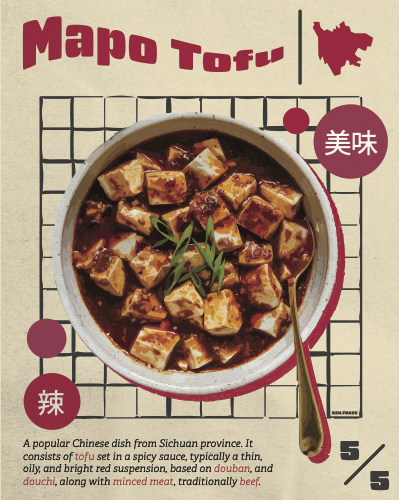

Process

Mapo-Tofu
2024, Digital, 15 in x 18 in
This poster was designed to appeal an audience to a comfort meal of mine. There is nothing more satisfying than on a cold day to have a bowl of fluffy white rice with a plate full of spicy mapo-tofu.
I wanted to attract attention first with an inviting image of the meal and have the red outline highlight it. Also explaining where the dish originates from with a map of the Sichuan Providence and chinese text that reads tasty and delicious.